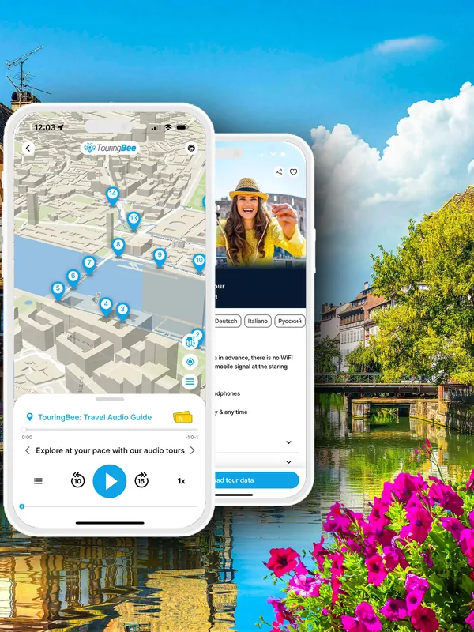

Strasbourg compte une dizaine de musées municipaux, mais vouloir tous les voir en un seul séjour n'est pas une bonne idée. Si vous venez pour deux jours, mieux vaut en choisir deux, trois au maximum : il vous restera du temps pour la ville elle-même. Heureusement, certains des musées les plus intéressants se trouvent juste à côté de la cathédrale, ce qui permet de les combiner facilement avec une promenade dans le centre historique.

Audioguide de Strasbourg, à faire seul Accès immédiat
Le parcours de la visite audio TouringBee passe près de plusieurs musées : en chemin, vous pouvez vous faire une idée des lieux et décider lesquels vous aimeriez visiter. Il n'existe pas de liste universelle des meilleurs musées. Pour une première visite de Strasbourg, certains sont difficiles à manquer, tandis que d'autres peuvent facilement attendre la prochaine fois.
L'essentiel en bref
| À retenir | |
|---|---|
| Un musée | 9 € dans la plupart des musées municipaux |
| Pass d'un jour | 20 €, en deux versions : pour les musées municipaux et pour le palais Rohan |
| Gratuit | Musées municipaux pour les moins de 18 ans et pour tous le premier dimanche du mois. L'Aubette 1928 est toujours gratuite |
| Horaires de la plupart des musées municipaux | En semaine 10h–13h et 14h–18h, le week-end 10h–18h sans interruption |
| Jour de fermeture | Le lundi pour la plupart des musées, le mardi pour ceux du palais Rohan |
| Billets | À la caisse du musée, pas de vente officielle en ligne |
| Musée alsacien | Fermé pour restauration jusqu'au 1er juin 2028 |
Le Musée alsacien : il faudra attendre 2028
Le Musée alsacien est fermé pour restauration jusqu'au 1er juin 2028. C'est important, car il reste l'un des musées les plus souvent recommandés à ceux qui découvrent Strasbourg. On y trouve des intérieurs et des ateliers alsaciens reconstitués. Meubles, vaisselle, couvre-lits brodés et jouets montrent comment vivaient ici les gens ordinaires aux XVIIIe et XIXe siècles, et non leurs évêques.
Quand le musée rouvrira, il méritera au moins une heure. Pour l'instant, il faudra vous contenter d'admirer le bâtiment de l'extérieur. Si vous tombez sur un itinéraire qui vous propose d'y entrer dès maintenant, vous saurez que son auteur n'a pas vérifié les horaires depuis un moment.
Ce que ça coûte et quand un pass est rentable
Un billet plein tarif pour la plupart des musées municipaux coûte 9 €. Il y a des exceptions : les intérieurs de l'Aubette 1928 sont gratuits, et la galerie Heitz a son propre tarif. Les moins de 18 ans entrent gratuitement dans les musées municipaux. Le premier dimanche du mois, l'entrée y est gratuite pour tous.
Si vous prévoyez de visiter plusieurs musées dans la journée, comparez d'abord les pass d'un jour. Il y en a deux, à 20 € chacun. L'un couvre les musées municipaux, ce qui permet de combiner facilement, par exemple, le musée de l'Œuvre Notre-Dame, le Musée historique et l'un des musées du palais Rohan. L'autre est réservé au palais Rohan lui-même, où le musée des Beaux-Arts, le musée des Arts décoratifs et le Musée archéologique cohabitent sous le même toit. Il inclut aussi la galerie Heitz. Comme leur prix est le même, demandez à la caisse lequel convient le mieux à votre programme avant d'acheter.
À titre de comparaison, trois billets séparés pour les musées du palais reviennent à 27 €. Un pass est donc rentable si vous prévoyez une journée bien remplie de musées. Si vous voulez seulement entrer dans un ou deux musées, des billets ordinaires suffisent généralement.
Billets simples et pass s'achètent à la caisse du musée : il n'y a pas de vente officielle en ligne. En semaine, les jours d'ouverture, beaucoup de musées ferment pour le déjeuner de 13h à 14h. Le week-end, la plupart restent ouverts sans pause.
Il vaut aussi la peine de faire le calcul pour la Strasbourg City Card. Elle coûte 5 €, reste valable sept jours et donne droit à des réductions sur les musées, la plateforme de la cathédrale et la promenade en bateau Batorama. Elle s'achète en ligne, mais il faut ensuite la retirer à l'office de tourisme, place de la Cathédrale. Si vous comptez de toute façon monter à la cathédrale et faire une croisière sur l'Ill, la carte sera très probablement rentabilisée. Et si vous aimeriez découvrir la ville avec un guide, une visite de Strasbourg se choisit facilement en ligne.
Cinq musées qui valent votre temps
1. Le musée de l'Œuvre Notre-Dame
9 € · environ une heure et quart · le complément idéal de la cathédrale.
C'est ici que sont conservées les sculptures médiévales originales qui ornaient autrefois la cathédrale. Une grande partie de ce que vous photographiez sur la façade est une copie, tandis que les originaux se trouvent ici, à hauteur d'yeux, à l'abri des intempéries qui les détruisaient. Parmi eux, l'Église et la Synagogue et le célèbre Séducteur. Voir un visage du XIIIe siècle à quarante centimètres plutôt qu'à quarante mètres change votre regard sur la cathédrale elle-même. À côté, des œuvres de Nicolas Gerhaert de Leyde, Konrad Witz et Hans Baldung Grien.
Le musée fait partie des musées municipaux de Strasbourg. Il ne faut pas le confondre avec la Fondation de l'Œuvre Notre-Dame, qui existe depuis le Moyen Âge et reste chargée de l'entretien de l'édifice. Les tailleurs de pierre de la fondation travaillent toujours le grès rose des Vosges et restaurent le décor sculpté de la cathédrale.
Pour qui : tous ceux qui ont passé plus de cinq minutes devant la façade. À visiter de préférence le même jour que la cathédrale de Strasbourg.
2. Le Musée historique de la Ville de Strasbourg
9 € · environ une heure · l'histoire de la ville dans l'ancienne Grande Boucherie.
Le musée occupe la Grande Boucherie, la halle aux viandes construite en 1587–1588. On y vendait de la viande, et un abattoir se trouvait dans la cour intérieure. Rien à l'intérieur ne le rappelle aujourd'hui.
Les salles présentent des armures, des armes anciennes et des costumes de bourgeois. Mais le véritable trésor du musée est l'immense plan-relief de Strasbourg, réalisé au XVIIIe siècle. Restez vingt minutes devant lui, et les rues que vous connaissez commencent à former une image claire. On voit comment la rivière entoure la Grande Île, où passaient les fortifications et pourquoi les Ponts couverts ont été construits exactement à cet endroit. L'île elle-même est présentée en détail dans notre guide de la vieille ville de Strasbourg.
Pour qui : ceux qui aiment comprendre où ils se trouvent, et les enfants qui aiment les maquettes et les objets anciens : le parcours comprend des dispositifs ludiques et numériques. Avec de très jeunes enfants, mieux vaut estimer à l'avance combien de temps ils tiendront.
3. Palais Rohan : le musée des Beaux-Arts
9 € ou pass d'un jour · environ une heure · le plus intéressant des trois musées du palais pour les amateurs de peinture.
La moitié de l'expérience, c'est le palais lui-même. Cette résidence du XVIIIe siècle a été construite pour le cardinal Armand-Gaston de Rohan, que la légende locale disait fils illégitime de Louis XIV. Sa splendeur s'explique pourtant plus simplement : le palais a été conçu comme une résidence d'apparat du prince-évêque, capable de recevoir le roi et d'autres hôtes de marque. Louis XV, Marie-Antoinette et Napoléon y ont séjourné.
La collection couvre la peinture européenne des premiers maîtres italiens au XIXe siècle, avec notamment des œuvres de Giotto et de Rubens. Ce n'est pas le Louvre, mais c'est une véritable collection, dans des salles où l'on a plaisir à s'attarder.
Pour qui : les amateurs de peinture et d'intérieurs du XVIIIe siècle. À éviter : si vous n'avez que trois heures pour tout Strasbourg.
4. Palais Rohan : le musée des Arts décoratifs
9 € ou pass d'un jour · 40 minutes · le clou de la visite, ce sont les appartements d'apparat.
Le musée des Arts décoratifs occupe une partie du même palais, mais il faut un billet séparé. L'intérêt principal, ce sont les appartements d'apparat du cardinal, même si la collection comprend aussi des céramiques et des horloges. Si ce sont surtout les intérieurs historiques qui vous intéressent, quarante minutes suffiront. Des trois musées du palais, c'est le plus facile à laisser de côté.
5. Palais Rohan : le Musée archéologique
9 € ou pass d'un jour · environ 45 minutes · dans les sous-sols, et plus intéressant qu'il n'y paraît.
On peut y suivre l'histoire de l'Alsace, des premiers habitats préhistoriques à l'Argentoratum romain et au haut Moyen Âge. Il est particulièrement intéressant de voir les découvertes de l'époque où un camp militaire romain se dressait à l'emplacement de l'actuelle Strasbourg. À éviter : si chez vous, vous ne vous arrêteriez pas devant une collection romaine. Si vous n'avez qu'une journée, c'est le premier musée à rayer.
Cinq autres musées selon vos centres d'intérêt
- Aubette 1928. Des intérieurs d'avant-garde gratuits, place Kléber. Sophie Taeuber-Arp, Hans Arp et Theo van Doesburg ont fait du café et des salles une œuvre moderniste complète. Un bon choix si vous voulez voir un Strasbourg qui n'a rien de médiéval. Généralement ouverte du mercredi au samedi, de 14h à 18h.
- Le Musée zoologique. Les sciences naturelles dans le quartier universitaire, en dehors de l'île. Après une rénovation de grande ampleur, il a rouvert en 2025 et raconte désormais la biodiversité et la relation entre l'humanité et la nature. Un bon choix pour les familles et les passionnés de sciences naturelles, mais il apportera peu à ceux qui sont venus pour les colombages.
- Le Vaisseau. Un musée des sciences interactif, à l'écart du centre historique. Si vous voyagez avec des enfants de moins de 12 ans, surtout par temps de pluie, il vaut la visite. Ce n'est pas un musée municipal, donc ni le pass d'un jour ni la gratuité du premier dimanche ne s'y appliquent. Les adultes sans enfants trouvent généralement les musées municipaux plus intéressants.
- Le musée Tomi Ungerer. Ungerer est né à Strasbourg et a utilisé la même plume pour illustrer des livres pour enfants et pour une satire politique mordante. Le musée montre les deux facettes de son œuvre sans chercher à en arrondir les angles. On peut aussi y découvrir le travail d'autres illustrateurs des XXe et XXIe siècles. Petit et incisif, environ 45 minutes, c'est le meilleur endroit de la ville pour les amoureux de l'illustration.
- Le musée d'Art moderne et contemporain (MAMCS). Ce bâtiment de verre que l'on aperçoit depuis la terrasse du barrage Vauban. C'est l'un des principaux musées d'art de Strasbourg, avec des œuvres de la fin du XIXe siècle à nos jours. Si l'art moderne vous intéresse, prévoyez une bonne heure et demie. Si votre séjour est court et que la ville médiévale est votre priorité, il peut attendre la prochaine fois.
Quand il vaut mieux se passer des musées
Si vous avez une journée, la réponse est un musée ou aucun. Le meilleur de Strasbourg est en plein air et gratuit : la façade occidentale de la cathédrale, les Ponts couverts, la terrasse du barrage Vauban, tout cela réuni dans notre sélection de choses à faire à Strasbourg. Le programme Strasbourg en un jour laisse exactement un créneau pour un musée, après le déjeuner.
Vous arrivez un lundi ? Retirez les musées de votre programme, sauf les trois du palais Rohan. Une promenade en bateau, la montée à la cathédrale et une balade dans la Neustadt les remplacent très bien. Le mardi, c'est l'inverse : c'est justement le palais Rohan qui est fermé.
Le premier dimanche du mois, les musées municipaux sont gratuits, vous n'aurez donc pas besoin de pass pour eux. Arrivez au musée de l'Œuvre Notre-Dame dès l'ouverture, à 10h.
Strasbourg avec un audioguide
Les musées aident à comprendre l'histoire de Strasbourg, mais on peut en apprendre beaucoup avant même d'entrer dans les salles. La visite audio TouringBee part du pont Kuss, à cinq minutes de la gare, traverse tout le centre historique et se termine à l'église Saint-Paul. En chemin, elle vous parle des bâtiments, des places et des personnes qui ont façonné la ville. Vous pouvez la commencer quand vous voulez et lancer chaque enregistrement une fois arrivé sur place.
- 33 arrêts, environ 2 h 30 à votre rythme, enregistrements de 1 à 3 minutes.
- À partir de 9,99 €, paiement unique, un an d'accès, 8 langues.
- Téléchargez la visite à l'avance : la carte et les enregistrements fonctionneront sans connexion internet.
- La carte indique votre position, ce qui permet de trouver facilement l'arrêt suivant.
Prêt à découvrir Strasbourg ?
À Strasbourg, on peut facilement passer une journée entière sans entrer dans un seul musée, et ce ne sera pas du temps perdu. La façade de la cathédrale change avec la lumière, les vieilles maisons se reflètent dans les canaux de la Petite France, et la terrasse du barrage Vauban offre une vue sur les toits du centre historique. La ville elle-même ressemble à un musée, sans murs ni billets.
Questions fréquentes
Quel est le meilleur musée de Strasbourg ?
Pour une première visite, le musée de l'Œuvre Notre-Dame. Il conserve les sculptures médiévales originales qui ornaient autrefois la façade de la cathédrale, où se trouvent aujourd'hui des copies. Comptez environ une heure et quart, billet à 9 €.
Combien coûtent les musées de Strasbourg ?
Un billet plein tarif pour la plupart des musées municipaux coûte 9 €. Un pass d'un jour coûte 20 € et existe en deux versions : pour les musées municipaux et pour les trois musées du palais Rohan. Les moins de 18 ans entrent gratuitement, et le premier dimanche du mois, les musées municipaux sont gratuits pour tous.
Le pass d'un jour est-il rentable ?
Oui, si vous voulez visiter dans la journée trois musées payants principaux au plein tarif : trois billets séparés coûtent 27 €, le pass 20 €. Pour un ou deux musées, des billets ordinaires suffisent généralement.
Peut-on acheter les billets de musée en ligne ?
Non. Billets simples et pass s'achètent à la caisse du musée, et il n'y a pas de vente officielle en ligne.
Le Musée alsacien est-il ouvert ?
Non. Il est fermé pour restauration jusqu'au 1er juin 2028, même s'il figure encore dans des guides et des itinéraires que personne n'a mis à jour.
Quand les musées de Strasbourg sont-ils fermés ?
La plupart des musées municipaux ferment le lundi, et les trois musées du palais Rohan le mardi. Beaucoup sont ouverts en semaine de 10h à 13h et de 14h à 18h, et le week-end de 10h à 18h sans interruption. Certains lieux, comme l'Aubette 1928, ont leurs propres horaires.
Quel musée choisir avec des enfants ?
Le Vaisseau, un musée des sciences interactif à l'écart du centre historique, qui mérite une demi-journée. Les enfants apprécieront aussi le Musée zoologique rénové et le plan-relief du Musée historique.
À lire aussi
- Guide de Strasbourg : l'essentiel sur la ville
- Strasbourg en un jour : un programme heure par heure avec un musée
- Cathédrale de Strasbourg : découvrez l'édifice à l'origine de la collection du musée
- Que faire à Strasbourg : 16 idées pour votre séjour
- La vieille ville de Strasbourg : l'île que montre le plan-relief
Pour une première visite, un ou deux musées suffisent donc. Le musée de l'Œuvre Notre-Dame vous permet de voir de près des sculptures presque invisibles depuis la rue. Le Musée historique vous aide à comprendre comment fonctionne le vieux Strasbourg et pourquoi ses rues ont cet aspect. S'il vous reste du temps ou si la météo se gâte, ajoutez le musée des Beaux-Arts au palais Rohan. Puis ressortez : c'est dehors que l'histoire de Strasbourg continue.